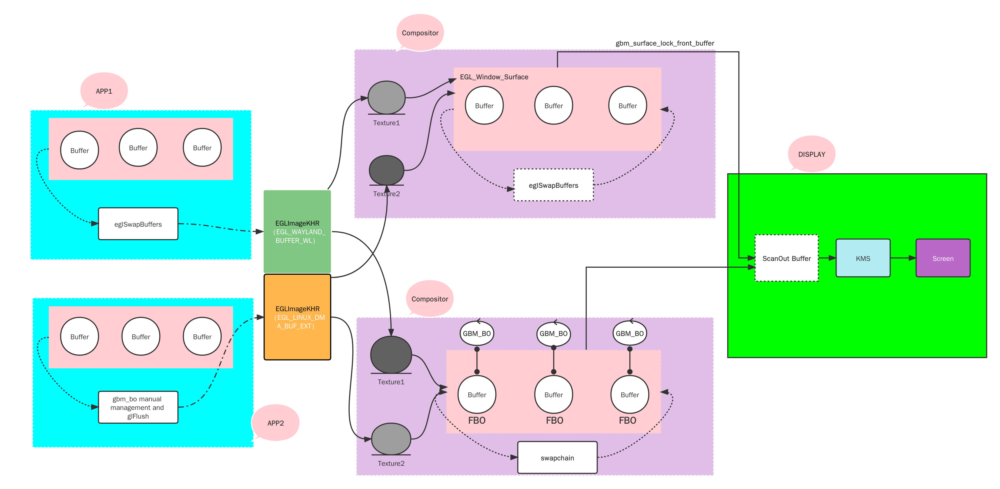
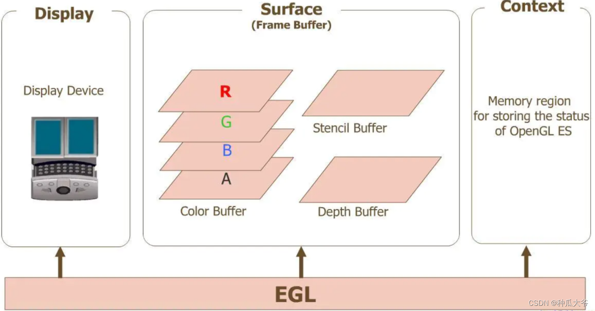
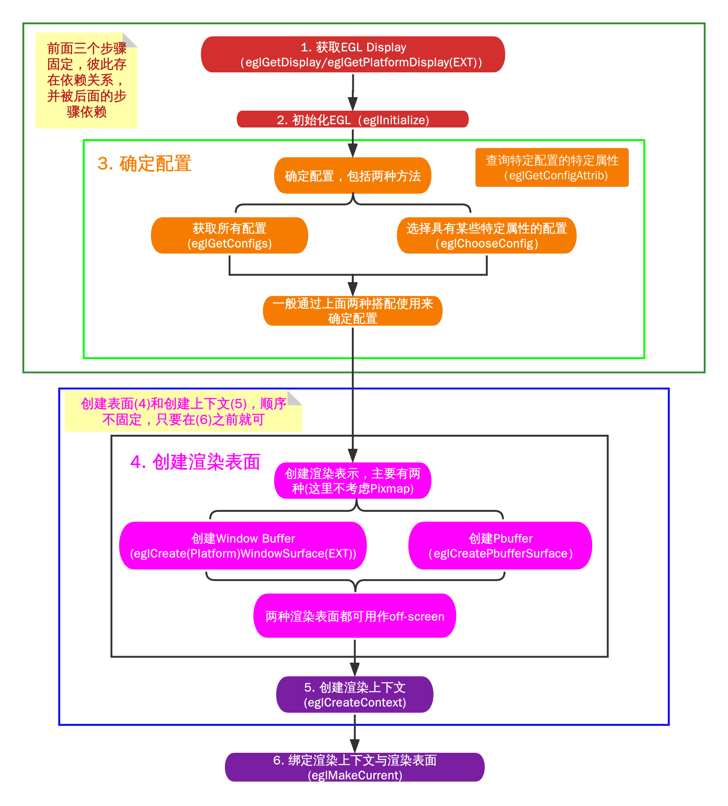
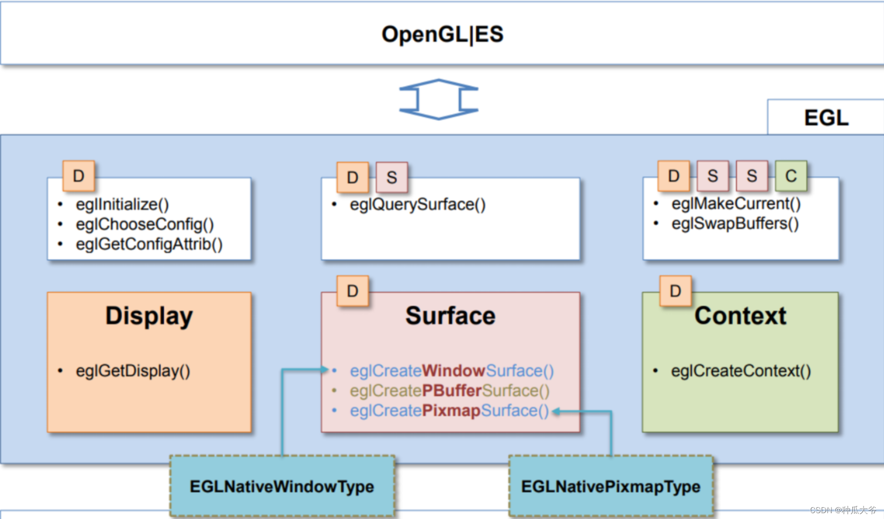
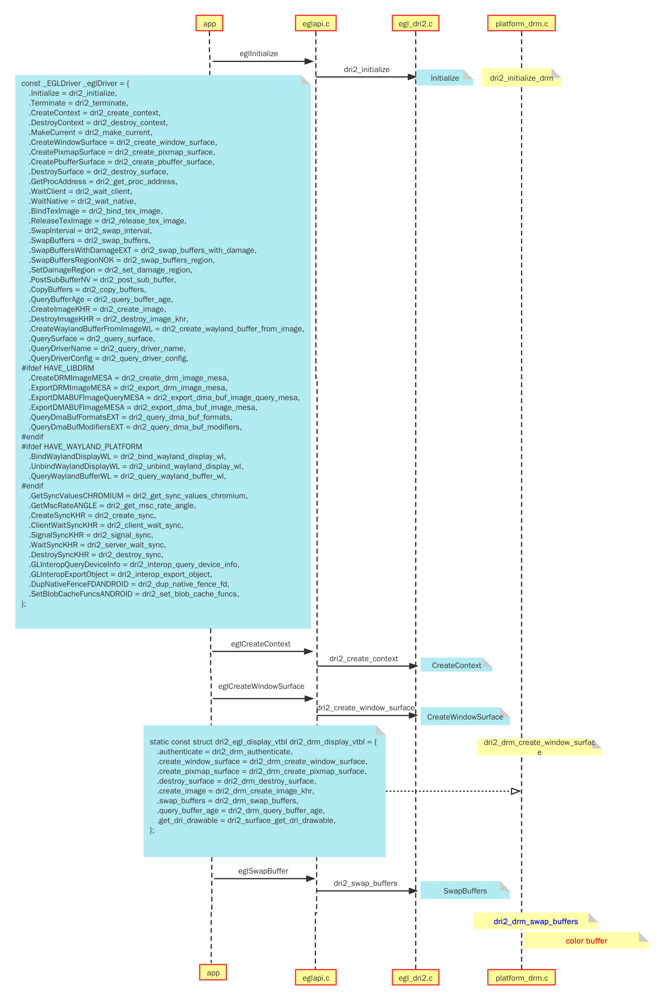
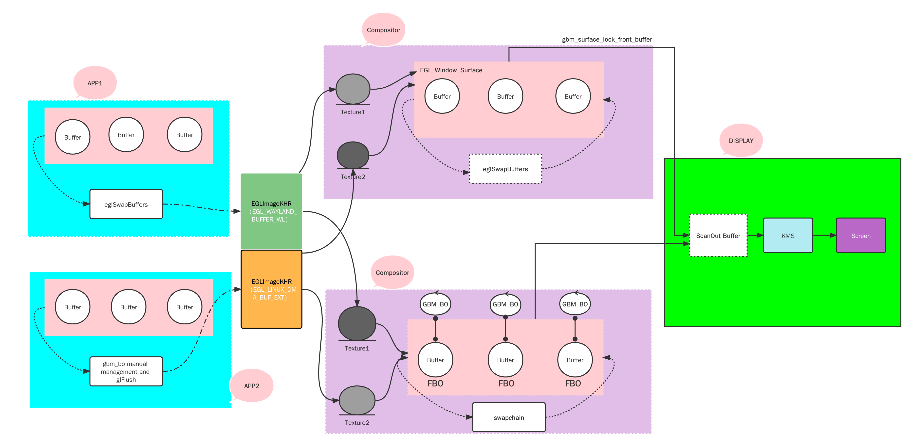
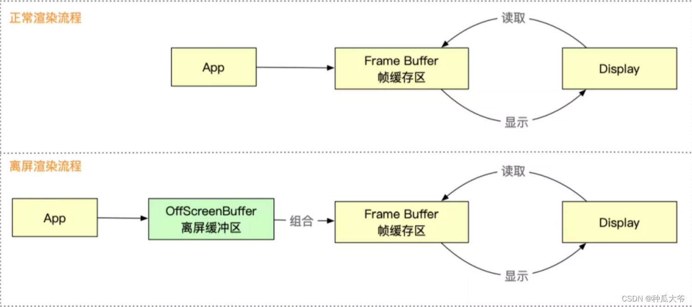
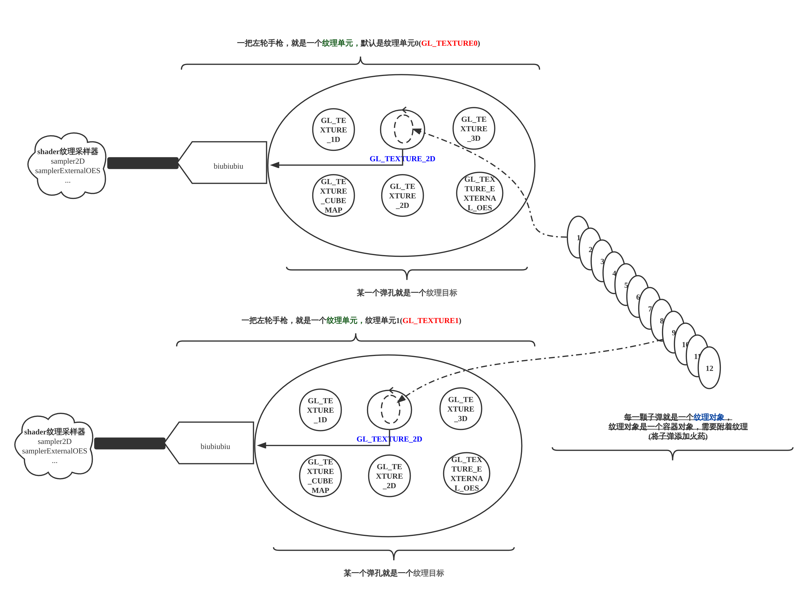
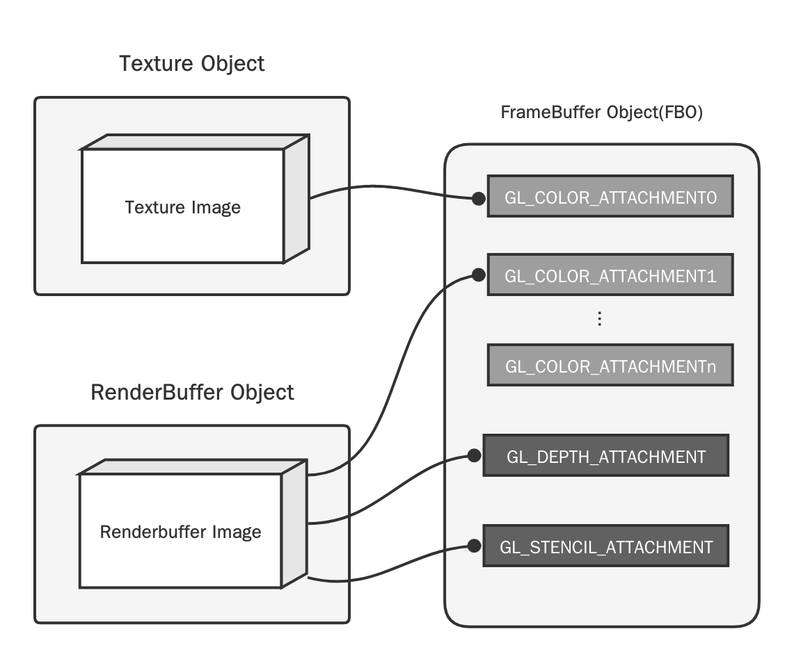

wayland浅析之EGL、Opengles、GBM
Linux Graphics: wayland浅析 egl opengles gbm

- 本文针对不同的compositor，浅析
egl+opengles+gbm搭配使用情况；
| Author | Date | Version | Description |
|---|---|---|---|
| 陈梓归 | 2022-11-15 | V1.0 | 第一个版本 |
1. 前言
1.1 问题一：是不是调用eglSwapBuffers函数以后图像就直接显示到屏幕上了？
1.2 问题二：EGL基本使用流程，EGL搭配GBM上屏显示基本流程？
1.3 问题三： 什么是off-screen，如何进行off-screen？
1.4 问题四：接着问题三、如何理解Texture、FBO、RenderBuffer在合成器中的作用；
2. EGL
- EGL是Khronos渲染API（如OpenGL、OpenGL ES或OpenVG）与底层本地平台(窗口)系统之间的接口。
- 简单理解：OpenGL是图形渲染的API，提供了一套统一的接口来达到跨平台的目的，但是光有OpenGL渲染的API还是不行，还需要有渲染环境的支持，而每个不同的操作系统(如windows、 linux、 android等)都有自己的一套窗口管理系统;
- 假如对不同操作系统都适配一套接口，那就和OpenGL的跨平台初衷相违背了。
- 所以EGL就是定义了一套标准，来构建不同平台的窗口系统的渲染环境。
- EGL主要功能：处理图形上下文管理、Buffer管理和渲染同步

- 简单理解：OpenGL是图形渲染的API，提供了一套统一的接口来达到跨平台的目的，但是光有OpenGL渲染的API还是不行，还需要有渲染环境的支持，而每个不同的操作系统(如windows、 linux、 android等)都有自己的一套窗口管理系统;
-
简介：
- Display (EGLDisplay): 对实际显示设备/窗口系统的抽象；
- Surface (EGLSurface): 存储图像的内存区域；
- Context (EGLContext): 存储渲染API的状态信息；
-
一套标准的EGL绘制流程简介：
- 这里只考虑标准绘制情况，还不考虑扩展等特殊情况，特殊情况后面会详解；


1. 获取 EGL Display 对象：eglGetDisplay
2. 初始化与 EGLDisplay 之间的连接：eglInitialize
3. 获取 EGLConfig 对象：eglChooseConfig / eglGetconfigs
4. 创建 EGLContext 实例：eglCreateContext
5. 创建 EGLSurface 实例：eglCreatewindowSurface / eglCratePbufferSurface
6. 连接 EGLContext 和 EGLSurface 上下文: eglMakeCurrent
7. 使用 OpenGL ES API 绘制图形：gl_*
8. 切换 front buffer 和 back buffer 显示：eglSwapBuffer
9. 断开并释放与 EGLSurface 关联的 EGLContext 对象：eglRelease
10. 删除 EGLSurface 对象
11. 删除 EGLContext 对象
12. 终止与 EGLDisplay 之间的连接
2.1 获取Display的三种方式
-
以上三种用法基本一致:
-
特别是
EGLDisplay eglGetPlatformDisplay和EGLDisplay eglGetPlatformDisplayEXT- 一个是在EGL 1.5以上版本引入，一个是1.4版本的扩展引入；
-
-
它们与
EGLDisplay eglGetDisplay(NativeDisplayType native_display);细微区别；- eglGetDisplay会根据现在的环境来决定默认的原生窗口系统，其他两个需要手动指定平台；
-
compositor运行相当于是裸机运行没有窗口环境，首先必须通过GBM或者EGL_PLATFORM_DEVICE_EXT扩展这两种方式来获取EGLDisplay;
- 补充GBM概念: 基于GEM/TTM的驱动对外是没有提供统一的内存管理接口的，至少Buffer Object创建销毁等操作是需要自行提供设备相关的即口进行实现的。
- 用户态没有统一的接口对缓冲区进行管理，这导致某些特定用户态程序的开发的困难，如wayland compositor。
- 简单的说GBM就是为了实现DRM(
gbm_device)作为EGL的本地平台，创建的句柄可以用来初始化EGL和创建渲染目标缓冲区
- 以GBM平台为例：
// get gdm_device // path = "/dev/dri/renderD128" / "dev/dri/card0" egl_gbm.render_fd = open(path, O_RDWR|O_CLOEXEC); assert(-1 != egl_gbm.render_fd); egl_gbm.gbm_device = gbm_create_device(egl_gbm.render_fd); assert(NULL != egl_gbm.gbm_device); // get display 1. egl_gbm.display = eglGetDisplay((EGLNativeDisplayType)egl_gbm.gbm_device); 2. egl_gbm.display = eglGetPlatformDisplay(EGL_PLATFORM_GBM_KHR, egl_gbm.gbm_device, NULL); 3. egl_gbm.display = eglGetPlatformDisplayEXT(EGL_PLATFORM_GBM_MESA, egl_gbm.gbm_device, NULL); // wlroots里面从严谨性来说，通过GBM获取EGL Display的时候，eglGetPlatformDisplayEXT后面的参数应该是EGL_PLATFORM_GBM_MESA而不是EGL_PLATFORM_GBM_KHR； - 补充GBM概念: 基于GEM/TTM的驱动对外是没有提供统一的内存管理接口的，至少Buffer Object创建销毁等操作是需要自行提供设备相关的即口进行实现的。
-
相关EGL支持platform：
-
EGL_PLATFORM_DEVICE_EXT 0x313F- 通过
/dev/dri/card0或者/dev/dri/renderD128作为平台设备扩展来申请EGL Display;- 这种方式还得依赖EGL_EXT_device_enumeration和EGL_EXT_device_query这两个特性，有兴趣可以了解一下;
- 通过
-
EGL_PLATFORM_GBM_KHR / EGL_PLATFORM_GBM_MESA 0x31D7- To obtain an EGLDisplay from an GBM device, call eglGetPlatformDisplay with <platform> set to EGL_PLATFORM_GBM_KHR.
- To obtain an EGLDisplay from an GBM device, call eglGetPlatformDisplayEXT with<platform> set to EGL_PLATFORM_GBM_MESA.
-
EGL_PLATFORM_WAYLAND_KHR / EGL_PLATFORM_WAYLAND_EXT 0x31D8- To obtain an EGLDisplay backed by a Wayland display, call eglGetPlatformDisplay with <platform> set to EGL_PLATFORM_WAYLAND_KHR.
- To obtain an EGLDisplay backed by a Wayland display, call eglGetPlatformDisplayEXT with <platform> set to EGL_PLATFORM_WAYLAND_EXT.
-
EGL_PLATFORM_X11_KHR / EGL_PLATFORM_X11_EXT 0x31D5- To obtain an EGLDisplay backed by an X11 screen, call eglGetPlatformDisplay with <platform> set to EGL_PLATFORM_X11_KHR.
- To obtain an EGLDisplay backed by an X11 screen, call eglGetPlatformDisplayEXT with <platform> set to EGL_PLATFORM_X11_EXT.
-
-
补充：
- KHR和EXT扩展，在使用上没有任何区别，只是EGL版本的历史兼容缘故；
2.2 Config and Attribute
2.2.1 EGL Config Attribute
- Config属性一般只用于创建Surface和Context
| Config Attribute | Describe | Default Value |
|---|---|---|
| EGL_BUFFER_SIZE | 颜色缓冲区中所有颜色分量的位数 | 0 |
| EGL_RED_SIZE | 颜色缓冲区中红色分量的位数 | 0 |
| EGL_GREEN_SIZE | 颜色缓冲区中绿色分量的位数 | 0 |
| EGL_BLUE_SIZE | 颜色缓冲区中蓝色分量的位数 | 0 |
| EGL_ALPHA_SIZE | 颜色缓冲区中Alpha值位数 | 0 |
| EGL_LUMINANCE_SIZE | 颜色缓冲区中亮度位数 | 0 |
| EGL_COLOR_BUFFER_TYPE | 颜色缓冲区类型：EGL_RGB_BUFFER / EGL_LUMINANCE_BUFFER | EGL_RGB_BUFFER |
| EGL_CONFIG_ID | 唯一的EGLConfig标识符值 | EGL_DONT_CARE |
| EGL_DEPTH_SIZE | 深度缓冲区位数 | 0 |
| EGL_STENCIL_SIZE | 模版缓冲区位数 | 0 |
| EGL_SURFACE_TYPE | 支持的表面类型：EGL_WINDOW_BIT、EGL_PBUFFER_BIT、EGL_PIXMAP_BIT | EGL_WINDOW_BIT |
| EGL_RENDERABLE_TYPE | 支持的渲染接口：EGL_OPENGL_ES_BIT、EGL_OPENGL_ES2_BIT、EGL_OPENGL_ES3_BIT(KHR)、EGL_OPENGL_BIT | EGL_OPENGL_ES_BIT |
- 配置选择流程
// 这是我们对配置的需求
const EGLint config_attribs[] = {
EGL_BUFFER_SIZE, 32, // color component bit 32
EGL_DEPTH_SIZE, EGL_DONT_CARE,
EGL_STENCIL_SIZE, EGL_DONT_CARE,
EGL_SURFACE_TYPE, EGL_WINDOW_BIT,
EGL_RED_SIZE, 8,
EGL_GREEN_SIZE, 8,
EGL_BLUE_SIZE, 8,
EGL_ALPHA_SIZE, 8,
EGL_RENDERABLE_TYPE, EGL_OPENGL_ES2_BIT,
EGL_NONE,
};
EGLint max_num_configs, num_configs, config_index;
// 1. 获取此Display支持的可用的configs组数量； 140
if (!eglGetConfigs(display, NULL, 0, &max_num_configs)) {
fake_log(ERROR, "Failed to get display configs");
return false;
}
fake_log(INFO, "Display config max num = %d", max_num_configs);
// 2. 获取匹配我们需求的configs配置组； 20
EGLConfig *configs = malloc(num_configs * sizeof(EGLConfig));
if (!eglChooseConfig(display, config_attribs, configs, max_num_configs,
&num_configs)) {
fake_log(ERROR, "Failed to choose specify configs");
return false;
}
fake_log(INFO, "匹配 config_attribs Display choose config num = %d",
num_configs);
// 3. 在我们匹配的配置组里面，在匹配一下我们的格式需求，确定最终的配置；[20]
config_index = match_config_to_visual(display, GBM_FORMAT_ARGB8888, configs,
num_configs);
// ----
static int match_config_to_visual(EGLDisplay egl_display, EGLint visual_id,
EGLConfig *configs, int count) {
EGLint id;
for (int i = 0; i < count; ++i) {
if (!eglGetConfigAttrib(egl_display, configs[i], EGL_NATIVE_VISUAL_ID,
&id))
continue;
if (id == visual_id)
return i;
}
return -1;
}
2.2.2 EGL Additional Attribute
- 附加属性，是针对不同的egl函数所设置的需求属性；
2.2.2.1 Context
- Egl Context上下文包含了操作所需的所有状态信息，OpenGL ES 必须有一个可用的上下文 EGLContext 才能进行绘图。
- 如果没有 EGLContext ，OpenGL或者Opengles就没有执行的环境
| 标志 | 描述 | 默认 |
|---|---|---|
| EGL_CONTEXT_CLIENT_VERSION | 指定所使用的OpenGLES版本相关的上下文类型 | 1 |
/*
EGL_CONTEXT_CLIENT_VERSION, 3, //使用OpenGL ES 3.0 版本 API
EGL_CONTEXT_CLIENT_VERSION, 2, //使用OpenGL ES 2.0版本 API
EGL_CONTEXT_CLIENT_VERSION, 1, //使用OpenGL ES 1.0版本 API
*/
const ELGint attribList[] = {
EGL_CONTEXT_CLIENT_VERSION, 2, //使用OpenGL ES 2.0 版本 API
EGL_NONE
};
egl_gbm.context = eglCreateContext(egl_gbm.display, configs[config_index],
EGL_NO_CONTEXT, attribs);
2.2.2.2 WindowSurface
| 标志 | 描述 | 默认 |
|---|---|---|
| EGL_RENDER__BUFFER | 指定渲染所用的缓冲区 EGL_BACK_BUFFER EGL_SINGLE_BUFFER | EGL_BACK_BUFFER |
// use surface specify config
const EGLint attribList[] = {
EGL_RENDER_BUFFER, EGL_BACK_BUFFER,
EGL_NONE,
};
// attribList
egl_gbm.window_surface = egl_gbm.procs.eglCreatePlatformWindowSurfaceEXT(
egl_gbm.display, configs[config_index], egl_gbm.gbm_surface,
attribList);
2.2.2.3 PbufferSurface
| 标志 | 描述 | 默认 |
|---|---|---|
| EGL_WIDTH | 指定Pbuffer的宽度 | 0 |
| EGL_HEIGHT | 指定Pbuffer的高度 | 0 |
| EGL_LARGEST_PBUFFER | 如果请求的大小不可用，则选择内部最大的可用pbuffer大小 | EGL_FALSE |
| EGL_TEXTURE_FORMAT | 如果pbuffer绑定到一个纹理贴图指定的纹理格式类型 EGL_TEXTURE_RGB EGL_TEXTURE_RGBA EGL_NO_TEXTURE | EGL_NO_TEXTURE |
| EGL_TEXTURE_TARGET | 指定Pbuffer作为纹理贴图时应该连接到的相关纹理目标 EGL_TEXTURE_2D EGL_NO_TEXTURE | EGL_NO_TEXTURE |
EGLint pbuffer_attribs[] = {
EGL_WIDTH, 512,
EGL_HEIGHT, 512,
EGL_LARGEST_BUFFER, EGL_TRUE,
EGL_NONE
};
egl_gbm.pbuffer_surface = eglCreatePbufferSurface(egl_gbm.display, pbuffer_configs, pbuffer_attribList);
2.3 EGLSurface
2.3.1 Surface基本概念
-
Surface是一个抽象的概念，可以理解成一个容器对象，里面附着有不同的buffer用于显示提交；
- buffer:
color buffer(颜色缓冲)、depth buffer(深度缓冲)、stencil buffer(模板缓冲)
- buffer:
-
EGL中一共有三种Surface
-
WindowSurface
- 顾名思义WindowSurface是和窗口相关的，也就是在屏幕上的一块显示存储的封装，渲染后即显示在界面上。
- eglCreateWindowSurface
EGLSurface eglCreateWindowSurface( EGLDisplay display, EGLConfig config, NativeWindowType native_window, EGLint const * attrib_list);
- eglCreatePlatformWindowSurface
EGLSurface eglCreatePlatformWindowSurface( EGLDisplay display, EGLConfig config, void * native_window, EGLAttrib const * attrib_list);
- eglCreatePlatformWindowSurfaceEXT
EGLSurface eglCreatePlatformWindowSurfaceEXT( EGLDisplay dpy, EGLConfig config, void *native_window, const EGLint *attrib_list);EGL_EXT_platform_base
-
PbufferSurface
- 在显存中开辟一个空间，将渲染后的数据(帧)存放在这里。
- eglCreatePbufferSurface
EGLSurface eglCreatePbufferSurface( EGLDisplay display, EGLConfig config, EGLint const * attrib_list);
-
PixmapSurface
- 以位图的形式存放在内存中，各平台的支持很差。
- eglCreatePixmapSurface
EGLSurface eglCreatePixmapSurface( EGLDisplay display, EGLConfig config, NativePixmapType native_pixmap, EGLint const * attrib_list);
- eglCreatePlatformPixmapSurface
EGLSurface eglCreatePlatformPixmapSurface( EGLDisplay display, EGLConfig config, void * native_pixmap, EGLint const * attrib_list);
-
| 类型 | 绑定本地窗口句柄 | 绑定本地类型缓冲区 | 缓冲区 | 备注 |
|---|---|---|---|---|
| window surface | 是 | 否 | 多缓冲区 | 包括front buffer and back buffer； 默认在backbuffer中渲染，需要通过eglSwapBuffer来把渲染的结果显示到屏幕。 也有EGL_RENDER_TYPE可设置为EGL_SINGLE_BUFFER但这个要看ES的实现。一般无效； |
| PBuffer | 否 | 否 | 单缓冲区 | 不绑定任何本地的东西。需要指定EGL_WIDTH,EGL_HEIGHT参数，来创建对应的大小。不可以被显示，调用eglSwapBuffer是无效的。这种缓冲区可以直接用作纹理数据; |
| pixmapbuffer | 否 | 是(NativePixmapType) | 单缓冲区 | 一个Pixmap代表内存中的一张图片，如要上屏显示需转换成纹理 |
- pixmapbuffer与pbuffers的不同之处在于，它们确实有一个相关的本地像素图和本地像素图类型，而且有可能使用客户端API以外的API对像素图进行渲染；
- 使用客户端API以外的API：一个例子是，你想用GPU渲染一个图片，然后把它作为一个X11光标。在这种情况下，可以使用PixmapSurface，然后把东西绘制进去，再使用XCreateCursorFromPixmap把你的像素图变成一个光标（这是EGL规范中提到的 "本地API "的一个例子）。
GBM Platform平台设备只支持window surface，下面我们GBM Platform Device为例子来进行创建：
- 简而言之：
gbm_surface->egl_window_surface
// create gbm device and gbm surface
egl_gbm.gbm_device = gbm_create_device(gbm_fd);
assert(NULL != egl_gbm.gbm_device);
egl_gbm.gbm_surface = gbm_surface_create(egl_gbm.gbm_device, egl_gbm.mode.hdisplay, egl_gbm.mode.vdisplay,
GBM_FORMAT_XRGB8888, GBM_BO_USE_SCANOUT | GBM_BO_USE_RENDERING);
assert(NULL != egl_gbm.gbm_surface);
// get window_surface, 三者区别同Display不再叙述；
1. egl_gbm.window_surface = eglCreateWindowSurface(egl_gbm.display,configs[config_index], (EGLNativeWindowType)egl_gbm.gbm_surface,attribList);
2. egl_gbm.window_surface = eglCreatePlatformWindowSurface(egl_gbm.display, configs[config_index],egl_gbm.gbm_surface, (EGLAttrib *)attribList);
3. egl_gbm.window_surface = egl_gbm.procs.eglCreatePlatformWindowSurfaceEXT(egl_gbm.display, configs[config_index], egl_gbm.gbm_surface,attribList);
// create context
egl_gbm.context = eglCreateContext(egl_gbm.display, configs[config_index], EGL_NO_CONTEXT, attribs);
// draw_color_use_window_surface
eglMakeCurrent(egl_gbm.display, egl_gbm.window_surface,
egl_gbm.window_surface, egl_gbm.context);
glClearColor(1.0f, 0.0f, 0.0f, 0.0f);
glClear(GL_COLOR_BUFFER_BIT);
eglSwapBuffers(egl_gbm.display, egl_gbm.window_surface);
// scan_output_surface_to_display
drmModeSetCrtc
// read_output_surface_to_file
glReadPixels
// read_output_surface_to_texture --- need opengl es 3.0
glReadBuffer(GL_BACK)
glCopyTexImage2D
2.3.2 eglSwapBuffers作用

// color buffer就是我们用来渲染和送显的buffer
// 最大四个
#if defined(HAVE_WAYLAND_PLATFORM) || defined(HAVE_DRM_PLATFORM)
struct {
#ifdef HAVE_WAYLAND_PLATFORM
struct wl_buffer *wl_buffer;
bool wl_release;
__DRIimage *dri_image;
/* for is_different_gpu case. NULL else */
__DRIimage *linear_copy;
/* for swrast */
void *data;
int data_size;
#endif
#ifdef HAVE_DRM_PLATFORM
struct gbm_bo *bo;
#endif
bool locked;
int age;
} color_buffers[4], *back, *current;
#endif
// GBM平台，eglSwapBuffers最终就调用dri2_drm_swap_buffers
// 第一次进来get_back_bo是小于0的，就会进去申请buffer；
static EGLBoolean
dri2_drm_swap_buffers(_EGLDisplay *disp, _EGLSurface *draw)
{
struct dri2_egl_display *dri2_dpy = dri2_egl_display(disp);
struct dri2_egl_surface *dri2_surf = dri2_egl_surface(draw);
if (!dri2_dpy->flush) {
dri2_dpy->core->swapBuffers(dri2_surf->dri_drawable);
return EGL_TRUE;
}
if (dri2_surf->current)
_eglError(EGL_BAD_SURFACE, "dri2_swap_buffers");
for (unsigned i = 0; i < ARRAY_SIZE(dri2_surf->color_buffers); i++)
if (dri2_surf->color_buffers[i].age > 0)
dri2_surf->color_buffers[i].age++;
/* Make sure we have a back buffer in case we're swapping without
* ever rendering. */
if (get_back_bo(dri2_surf) < 0)
return _eglError(EGL_BAD_ALLOC, "dri2_swap_buffers");
dri2_surf->current = dri2_surf->back;
dri2_surf->current->age = 1;
dri2_surf->back = NULL;
dri2_flush_drawable_for_swapbuffers(disp, draw);
dri2_dpy->flush->invalidate(dri2_surf->dri_drawable);
return EGL_TRUE;
}
static int
get_back_bo(struct dri2_egl_surface *dri2_surf)
{
struct dri2_egl_display *dri2_dpy =
dri2_egl_display(dri2_surf->base.Resource.Display);
struct gbm_dri_surface *surf = dri2_surf->gbm_surf;
int age = 0;
if (dri2_surf->back == NULL) {
for (unsigned i = 0; i < ARRAY_SIZE(dri2_surf->color_buffers); i++) {
if (!dri2_surf->color_buffers[i].locked &&
dri2_surf->color_buffers[i].age >= age) {
dri2_surf->back = &dri2_surf->color_buffers[i];
age = dri2_surf->color_buffers[i].age;
}
}
}
if (dri2_surf->back == NULL)
return -1;
if (dri2_surf->back->bo == NULL) {
if (surf->base.v0.modifiers)
dri2_surf->back->bo = gbm_bo_create_with_modifiers(&dri2_dpy->gbm_dri->base,
surf->base.v0.width,
surf->base.v0.height,
surf->base.v0.format,
surf->base.v0.modifiers,
surf->base.v0.count);
else {
unsigned flags = surf->base.v0.flags;
if (dri2_surf->base.ProtectedContent)
flags |= GBM_BO_USE_PROTECTED;
dri2_surf->back->bo = gbm_bo_create(&dri2_dpy->gbm_dri->base,
surf->base.v0.width,
surf->base.v0.height,
surf->base.v0.format,
flags);
}
}
if (dri2_surf->back->bo == NULL)
return -1;
return 0;
}
2.3.2.2 问题一的回答，eglSwapBuffers的在上层的作用？
-
通过mesa代码可以看出，简单来说
eglSwapBuffers=gbm_bo_create+get_back_bo(第一次拿到为NULL，就会调用bo_create去创建)+glFlush -
实际上eglSwapBuffers函数执行以后，只是提示上层(一般是compositor)有输出buffer可以用了，这个时候是把输出buffer显示到屏幕上还是输出到文件或者其他地方，由上层策略来决定；
-
1. 如果显示到屏幕上这一种就是kwin和weston这两种compositor的底层送显方式；
-
scan_output_surface_to_display()
eglMakeCurrent(egl_gbm.display, egl_gbm.window_surface, egl_gbm.window_surface, egl_gbm.context); egl_gbm.gbm_bo = gbm_surface_lock_front_buffer(egl_gbm.gbm_surface); egl_gbm.handle = gbm_bo_get_handle(egl_gbm.gbm_bo).u32; egl_gbm.pitch = gbm_bo_get_stride(egl_gbm.gbm_bo); // pitch = mode.hdisplay * 4 // fake_log(ERROR, "handle = %d pitch = %d", egl_gbm.handle, egl_gbm.pitch); drmModeAddFB(egl_gbm.card_fd, egl_gbm.mode.hdisplay, egl_gbm.mode.vdisplay, 24, 32, egl_gbm.pitch, egl_gbm.handle, &egl_gbm.fb_id); drmModeSetCrtc(egl_gbm.card_fd, egl_gbm.crtc->crtc_id, egl_gbm.fb_id, 0, 0, &egl_gbm.connector_id, 1, &egl_gbm.mode);
-
这里补充一个点，关于之前提到的card节点即可渲染又可送显，render节点只能渲染，这里有很好的体现：
fd create gbm bo / gbm surface drmModeSetCrtc card GBM_BO_USE_SCANOUT | GBM_BO_USE_RENDERINGyes card GBM_BO_USE_RENDERINGno render GBM_BO_USE_SCANOUT | GBM_BO_USE_RENDERINGno render GBM_BO_USE_RENDERINGno
-
-
2. 如果输出到其他地方，就是后面要说的off-screen;
-
2.1 到内存,read_output_surface_to_file：
eglMakeCurrent(egl_gbm.display, egl_gbm.window_surface, egl_gbm.window_surface, egl_gbm.context); static FILE *file = NULL; static GLbyte *pbits = NULL; /* CPU memory to save image */ static uint32_t frame_cnt = 0; uint32_t frame_size = 10 * 10 * 4; if (!file) { file = fopen("rgba.bin", "w+"); assert(file); pbits = (GLbyte *)malloc(frame_size); assert(pbits); } glReadPixels(0, 0, 10, 10, GL_RGBA, GL_UNSIGNED_BYTE, pbits); size_t ret = fwrite(pbits, 1, frame_size, file); -
2.2 到纹理，window buffer到纹理需要OpenglES3.0才支持
glReadBuffer(GL_BACK) glCopyTexImage2D -
-
2.3.2.3 问题二的回答，总结wayland中使用EGL上屏显示流程
| wayland | GBM | Surface | scanout buffer关联 |
|---|---|---|---|
| Weston / Kwin | gbm_surface | egl_surface | eglSwapBuffer |
| Wlroots | gbm_bo | no | EglImage + glEGLImageTargetRenderbufferStorageOES（FBO）《— attach — 》gbm_bo |
- 通过以前的KMS讲解我们知道：
- 上屏显示就是将我们想要输出屏幕的内容弄到一个Framebuffer中，然后调用KMS API进行送显；
- 那么我们在Compositor怎么使用Opengl / Opengl Es 将内容渲染到一个scanout buffer中？
-
off-screen渲染中间过程，比如使用FBO，或者Pbuffer等，不再这里考虑中(
后面会详解)，这里只考虑Compositor最后的送显； -
1. weston/kwin中采用的方式：
GBM_Surface+Window_Surface+eglMakeCurrent(Surface和Context配置信息匹配的话，就关联上了scanout buffer)+eglSwapBuffer
-
2. wlroots中采用的方式：
GBM_BO+EGL_KHR_no_config_context+EGL_KHR_surfaceless_context+EGLImageKHR

-
2.3.2.4 补充wayland中的buffer协议抽象
| Global | Global Create | Global Bind |
|---|---|---|
| wl_shm | compositor | client/libEGL.so |
| wl_drm / mali_buffer_sharing | libEGL.so | libEGL.so |
| zwp_linux_dmabuf_v1 | compositor | client/libEGL.so |
-
稍微补充：
- libEGL.so如何创建和绑定global？
- 创建：
wayland server调用BindWaylandDisplayWL->libEGL_mesa.so / libEGL_mali.so-> 注册wl_drm / mali_buffer_sharing的global；
- 绑定：
wayland client调用eglInitialize->libEGL_mesa.so / libEGL_mali.so-> 绑定wl_drm / mali_buffer_sharing的global;
-
一共三种：
- 第一种：wh_shm
- 这种方式是通过共享内存的方式来实现客户端和Compositor之间的共享，通过这种方式分配的内存是物理不连续的，这种方式一般用于采用软件绘制的情况；而且当buffer在客户端绘制完成以后，通知Compositor开始合成，需要通过glTexImage2D()函数把buffer内容转成纹理上传到GPU中，这样的话性能是会受到影响的，因为纹理上传一般是比较耗时的操作。
- 第二种：wl_drm
- 这种方式通过EGL中的Window_Surface(Wayland Display)和eglSwapBuffer来保证客户端渲染buffer的创建和传递，然后客户端开始绘制，绘制完成以后，合成器拿到客户端输出buffer通过eglCreateImageKHR(
EGL_WAYLAND_BUFFER_WL)接口创建EGLImage，这个EGLImage可以直接作为Compositor的输入纹理来使用，不需要额外的拷贝工作。
- 这种方式通过EGL中的Window_Surface(Wayland Display)和eglSwapBuffer来保证客户端渲染buffer的创建和传递，然后客户端开始绘制，绘制完成以后，合成器拿到客户端输出buffer通过eglCreateImageKHR(
- 第三种: zwp_linux_dmabuf_v1
- 这种方式和第二种类似，区别在于合成器创建EGLImage后面的参数是eglCreateImageKHR(
EGL_LINUX_DMA_BUF_EXT)- 需要通过zwp_linux_dmabuf_v1协议来协商底层gbm_bo(dma-buf)的格式，第二种和第三种就是我们说的
Buffer Zero Copying；
- 需要通过zwp_linux_dmabuf_v1协议来协商底层gbm_bo(dma-buf)的格式，第二种和第三种就是我们说的
- 关于协议使用可见Weston中dmabuf client使用分析
- https://blog.csdn.net/u012839187/article/details/107535495
- Buffer Zero Copying
- 这种方式和第二种类似，区别在于合成器创建EGLImage后面的参数是eglCreateImageKHR(
- 第一种：wh_shm
-
关于三者详解以后有时间会单独写一篇适配文档单独说明😄
3.离屏渲染
3.1 定义
- 广义来说
- 如果要在显示屏上显示内容，我们至少需要一块与屏幕像素数据量一样大的frame buffer，作为像素数据存储区域，而这也是GPU存储渲染结果的地方。
- 如果有时因为面临一些限制，无法把渲染结果直接写入framebuffer，而是先暂存在另外的区域，之后再写入frame buffer，那么这个过程被称之为离屏渲染。

- 狭义来说off-screen就是先将内容渲染到纹理或者渲染缓冲区，然后再输出到scanout buffer进行送显；
- 应用场景的区别在于内容渲染如何到纹理
- 由于我们只会用到颜色缓冲区，所以纹理和渲染缓冲区没有区别
- 当使用模板、深度缓冲区以及多重采样时，会有性能上的提升；(
老外说的，待研究)
- 应用场景的区别在于内容渲染如何到纹理
3.２ 纹理
3.2.1 再谈概念
- 纹理几个概念傻傻分不清楚：
- 纹理目标：GL_TEXTURE_2D、TEXTURE_EXTERNAL_OES等;
- 纹理对象：纹理对象只是一个容器对象，容器内开始并没有东西(类似于FBO概念)，我们生成纹理数据保存进去;
- 纹理单元：GL_TEXTURE0-32，++纹理单元可以理解成通道，将数据传递到shader的通道++；
- 每一个纹理单元可以指定一个纹理目标：一般是GL_TEXTURE_1D, 2D, 3D or CUBE_MAP之一
- 可以这样理解：
- 一个纹理单元就是一把左轮手枪
- 支持的几种纹理目标就是手枪的弹孔标号，当前选定的纹理目标就是手枪正对弹膛的单孔
- 纹理对象就是子弹(纹理对象ID就是子弹标号)；
- 子弹打出来就直接到采样器进行shader采样；

- 子弹打出来就直接到采样器进行shader采样；
3.2.2 如何渲染到纹理
- 方式一：
- 通过绘制到窗口系统提供的帧缓冲区(Window_Surface)，然后将帧缓冲区的对应后缓冲区域复制到纹理来实现渲染到纹理；
- API：glReadBuffer、glCopyTex(Sub)Image2D
- 通过绘制到窗口系统提供的帧缓冲区(Window_Surface)，然后将帧缓冲区的对应后缓冲区域复制到纹理来实现渲染到纹理；
- 方式二：
- 通过使用连接到纹理的pbuffer来实现渲染到纹理
3.2.3 引入FBO
- 问题：
-
- 当我们使用方式一的时候，有一个弊端，只能在纹理尺寸小于等于窗口缓冲区尺寸才有效；
-
- 当我们使用方式二的时候，我们知道，窗口系统提供的表面必须连接到一个渲染上下文，使用pbuffer表面也需要一个渲染上下文，那么上下文频繁的切换会造成效率的低下；
-
- 再补充一个问题，如何将一个纹理拷贝到另一个纹理；
-
3.3 FBO
- 为了解决上面的弊端，我们就需要引入FBO；
3.3.1 概念
- FBO（Frame Buffer Object）即帧缓冲区对象，实际上是一个可添加缓冲区的容器，可以为其添加纹理或渲染缓冲区对象（RBO）。
- FBO 本身不能用于渲染，只有添加了纹理或者渲染缓冲区之后才能作为渲染目标，它仅且提供了 3 个附着（Attachment），分别是颜色附着、深度附着和模板附着。

- FBO 本身不能用于渲染，只有添加了纹理或者渲染缓冲区之后才能作为渲染目标，它仅且提供了 3 个附着（Attachment），分别是颜色附着、深度附着和模板附着。
3.3.2 附着Texture Image应用
static void draw_color_to_fbo_texture(){
// Texture
//off_screen_context
static const EGLint context_attribs[] = {
EGL_CONTEXT_CLIENT_VERSION, 2,
EGL_NONE
};
// 1. 可以看到我们创建的上下文是没有表面信息和配置信息的，不会造成切换的效率问题；
egl_gbm.off_screen_context = eglCreateContext(egl_gbm.display, EGL_NO_CONFIG_KHR, EGL_NO_CONTEXT, context_attribs);
eglMakeCurrent(egl_gbm.display, EGL_NO_SURFACE, EGL_NO_SURFACE,
egl_gbm.off_screen_context);
// 激活纹理单元(通道)－激活手枪
glActiveTexture(GL_TEXTURE0)
// 生成纹理对象－生成子弹
glGenTextures(1, &egl_gbm.texture_target_1);
// 绑定纹理目标 - 子弹放入弹孔
glBindTexture(GL_TEXTURE_2D, egl_gbm.texture_target_1);
glTexImage2D(GL_TEXTURE_2D, 0, GL_RGBA, egl_gbm.mode.hdisplay, egl_gbm.mode.vdisplay, 0, GL_RGBA, GL_UNSIGNED_BYTE, NULL);
// Fbo
glGenFramebuffers(1, &egl_gbm.fbo);
glBindFramebuffer(GL_FRAMEBUFFER, egl_gbm.fbo);
glFramebufferTexture2D(GL_FRAMEBUFFER, GL_COLOR_ATTACHMENT0, GL_TEXTURE_2D, egl_gbm.texture_target_1, 0);
if (glCheckFramebufferStatus(GL_FRAMEBUFFER) != GL_FRAMEBUFFER_COMPLETE) {
fprintf(stderr, "FBO creation failed\n");
}
glClearColor(0.0f, 1.0f, 0.0f, 0.0f);
glClear(GL_COLOR_BUFFER_BIT);
glFlush();
read_draw_to_file(EGL_NO_SURFACE, EGL_NO_SURFACE, egl_gbm.off_screen_context);
glBindTexture(GL_TEXTURE_2D, 0);
glBindFramebuffer(GL_FRAMEBUFFER, 0);
eglMakeCurrent(egl_gbm.display, EGL_NO_SURFACE, EGL_NO_SURFACE,
EGL_NO_CONTEXT);
}
3.3.3 附着RenderBuffer Image应用
static void draw_color_to_fbo_renderbuffer_display(){
// dmabuf: create gbm_bo
egl_gbm.gbm_rbo = gbm_bo_create(
egl_gbm.gbm_device, egl_gbm.mode.hdisplay, egl_gbm.mode.vdisplay,
GBM_FORMAT_XRGB8888, GBM_BO_USE_SCANOUT | GBM_BO_USE_RENDERING);
assert(NULL != egl_gbm.gbm_rbo);
// RGB plane count = 1
// YUY may be plane count = 3
egl_gbm.plane_count = gbm_bo_get_plane_count(egl_gbm.gbm_rbo);
egl_gbm.strides[0] = gbm_bo_get_stride(egl_gbm.gbm_rbo);
egl_gbm.dmabuf_fds[0] = gbm_bo_get_fd(egl_gbm.gbm_rbo);
egl_gbm.offsets[0] = gbm_bo_get_offset(egl_gbm.gbm_rbo,0);
fake_log(ERROR, "plane_count = %d offset = %d strides = %d dmabuf_fds = %d", egl_gbm.plane_count, egl_gbm.offsets[0], egl_gbm.strides[0], egl_gbm.dmabuf_fds[0]);
// egl_image create
const EGLint attribs_test[] = {
EGL_WIDTH, egl_gbm.mode.hdisplay,
EGL_HEIGHT, egl_gbm.mode.vdisplay,
EGL_LINUX_DRM_FOURCC_EXT, GBM_FORMAT_ARGB8888,
EGL_DMA_BUF_PLANE0_FD_EXT, egl_gbm.dmabuf_fds[0],
EGL_DMA_BUF_PLANE0_OFFSET_EXT, 0,
EGL_DMA_BUF_PLANE0_PITCH_EXT, egl_gbm.strides[0],
EGL_NONE,
};
// EGL_KHR_image_base + EGL_EXT_image_dma_buf_import
egl_gbm.egl_image = egl_gbm.procs.eglCreateImageKHR(egl_gbm.display, EGL_NO_CONTEXT, EGL_LINUX_DMA_BUF_EXT, NULL, attribs_test);
assert(EGL_NO_IMAGE_KHR != egl_gbm.egl_image);
// Render Buffer
//off_screen_context
static const EGLint context_attribs[] = {
EGL_CONTEXT_CLIENT_VERSION, 2,
EGL_NONE
};
egl_gbm.off_screen_context = eglCreateContext(egl_gbm.display, EGL_NO_CONFIG_KHR, EGL_NO_CONTEXT, context_attribs);
eglMakeCurrent(egl_gbm.display, EGL_NO_SURFACE, EGL_NO_SURFACE,
egl_gbm.off_screen_context);
glGenRenderbuffers(1, &egl_gbm.renderbuffer);
glBindRenderbuffer(GL_RENDERBUFFER, egl_gbm.renderbuffer);
// GL_OES_EGL_image
gles_fake.procs.glEGLImageTargetRenderbufferStorageOES(GL_RENDERBUFFER, egl_gbm.egl_image);
// Fbo
glGenFramebuffers(1, &egl_gbm.fbo);
glBindFramebuffer(GL_FRAMEBUFFER, egl_gbm.fbo);
glFramebufferRenderbuffer(GL_FRAMEBUFFER, GL_COLOR_ATTACHMENT0,
GL_RENDERBUFFER, egl_gbm.renderbuffer);
if (glCheckFramebufferStatus(GL_FRAMEBUFFER) != GL_FRAMEBUFFER_COMPLETE) {
fprintf(stderr, "FBO creation failed\n");
}
glClearColor(0.0f, 0.0f, 1.0f, 0.0f);
glClear(GL_COLOR_BUFFER_BIT);
glFlush();
read_draw_to_file(EGL_NO_SURFACE, EGL_NO_SURFACE, egl_gbm.off_screen_context);
egl_gbm.handle = gbm_bo_get_handle(egl_gbm.gbm_rbo).u32;
egl_gbm.pitch =
gbm_bo_get_stride(egl_gbm.gbm_rbo); // pitch = mode.hdisplay * 4
fake_log(ERROR, "handle = %d pitch = %d", egl_gbm.handle, egl_gbm.pitch);
drmModeAddFB(egl_gbm.card_fd, egl_gbm.mode.hdisplay, egl_gbm.mode.vdisplay,
24, 32, egl_gbm.pitch, egl_gbm.handle, &egl_gbm.fb_id);
drmModeSetCrtc(egl_gbm.card_fd, egl_gbm.crtc->crtc_id, egl_gbm.fb_id, 0, 0,
&egl_gbm.connector_id, 1, &egl_gbm.mode);
getchar();
glBindRenderbuffer(GL_RENDERBUFFER, 0);
glBindFramebuffer(GL_FRAMEBUFFER, 0);
eglDestroyImage(egl_gbm.display, egl_gbm.egl_image);
eglMakeCurrent(egl_gbm.display, EGL_NO_SURFACE, EGL_NO_SURFACE,
EGL_NO_CONTEXT);
}
- 这一种方法就是wlroots中如何将scanout buffer与render buffer关联起来，并送显的方式！
3.3.4 回答:如何将一个纹理拷贝到另一个纹理?
-
- 添加目标纹理为 FBO 的颜色附着（颜色缓冲区） ，绑定源纹理渲染到目标纹理。
-
- 添加源纹理为 FBO 的颜色附着（颜色缓冲区） , 使用 glCopyTexImage2D 拷贝当前 FBO 的颜色缓冲区到目标纹理。
-
- 通过FBO的块传输glBlitFramebuffer来完成；
开放原子开发者工作坊旨在鼓励更多人参与开源活动，与志同道合的开发者们相互交流开发经验、分享开发心得、获取前沿技术趋势。工作坊有多种形式的开发者活动，如meetup、训练营等，主打技术交流，干货满满，真诚地邀请各位开发者共同参与！
更多推荐
- 9
- 0
- 0
所有评论(0)